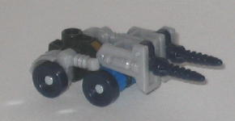
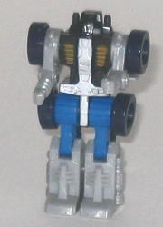
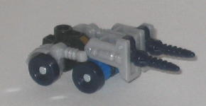
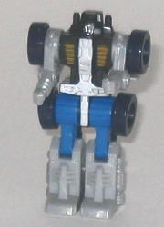
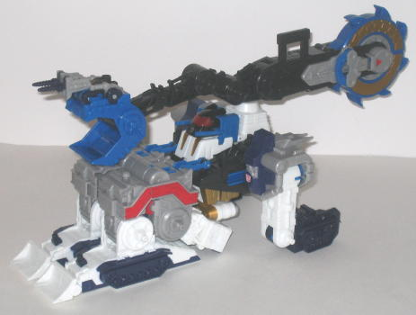
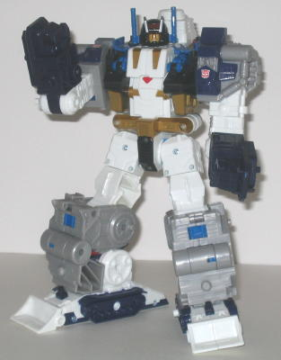
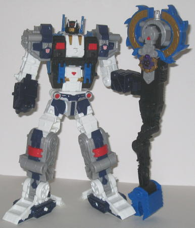

Drill
Bit
Drill
Bit
 
Allegiance : Minicon
Size : Mini-Con
Difficulty of Transformation : Very Easy
Color Scheme : Light milky gray, black, and some silver, very dark blue, blue, and dull metallic gold
Rating : 4.4
Drill
Bit


Allegiance
: Minicon
Size
: Mini-Con
Difficulty of Transformation
: Very
Easy
Color Scheme
: Light milky gray,
black, and some silver, very dark blue, blue, and dull metallic gold
Rating
: 4.4
Drill Bit's vehicle mode
is the laziest I've ever seen for a Minicon. Seriously.. what the heck
is this thing? It's very clearly his robot mode on its stomach with drills
flipped out of the feet, even after a casual glance. The arms are also
pretty clearly above the two wheels, and no real attempt is made to hide
them. Not to mention the design is completely impractical-- the cockpit
window is directly BEHIND the raised drill front, not in front of it, so
a driver wouldn't even be able to see where they're going! Still, on the
plus side, there's a pretty good amount of mold detailing for a Minicon,
and the color scheme of light gray, black, and blue works fairly well together,
and the silver and gold are nice accent colors. Drill Bit's Minicon port
is on the top of this mode, near the back end, so you'd have to plug him
into a larger Transformer's Powerlinx port robot-face up, which kind of
stinks.
Drill Bit's robot mode
is much better, though it's hard NOT to have a good robot mode with such
a stinker of a vehicle mode. The overall design and proportions are almost
exactly identical to Leader-1, with the exact same articulation (and limited
backwards knee articulation) to boot. I do like the paint apps and design
of the chest and head better on Drill Bit, however-- the mold detailing
and contrast of the paint apps are more pleasing to the eye.
Drill Bit has a fairly
good, if not extraordinary, robot mode, but he may as well not have a vehicle
mode, it's so incredibly poor. Definitely not the highlight of the set.
 Metroplex
Metroplex



Allegiance
: Autobot
Size
: Leader (Super)
Homeworld
: Giant Planet
Cyber Key Code
: lm74
Difficulty of Transformation to "Work
Mode"
: Easy
Difficulty of Transformation to "Battle
Robot Mode"
: Medium
Color Scheme
: White, light milky
gray, black, blue, very dark blue, and some dull metallic gold, transparent
light red, and red
Rating
: 7.4
Metroplex is a nod to
the G1 character of the same name-- however, instead of being a fortress
this time around, he's now a kind of highly futuristic strip miner-type
thing. (The main homages to the G1 version are in the two robot modes.)
This mode is most definitely NOT the highlight of the figure-- in fact,
it's downright lazy. It looks like his robot mode just sitting down in
an odd position with the arms turned the wrong way, quite frankly. I mean,
it's painfully, PAINFULLY obvious that the rear "treads" are just the robot
arms turned backwards. IT's also obvious the main body of the vehicle is
the robot chest and legs curled up, and there are some noticeable gaps
in the side of this mode that make it obvious in what position the legs
and chest are fixed in. In fact, the only clues that help one identify
that it's a strip miner are the big claw/sawblade assembly on the top,
and the treads and miniature shovels on the front end. Everything else
just looks like his robot mode folded up. Still, at least the sawblade/claw
assembly does look pretty cool, and it's on a piece that allows it to rotate
around, so you can decide whether you want the claw or the sawblade to
point forward. The sawblade cannot turn because of the Cyber Key gimmick
(discussed later), alas, but the claw can open and close, and there's a
slot on the upper part of the claw that allows Drill Bit's vehicle mode
to fit in there perfectly. The arm itself can also move at four different
points. The "vehicle head-cockpit" underneath the claw/sawblade arm also
looks very cool and menacing, and the dual (non-firing) guns mounted on
the side of the cockpit are creative uses of the robot head antennae. The
color scheme of white, gray, black, and blue is similar to his G1 self,
but with a few extra colors and accents added in to spice things up a bit,
and overall the colors look pretty good. There's also a pretty good amount
of mold and paint detailing on him in most places, though a few places,
like his sawblade/claw arm and robot arms, could use a some more paint
detailing.
Metroplex's "worker"
robot mode is the least impressive of his two different robot modes, but
it's still fairly good. My only really big problems with it are that his
legs are too short proportionally in this configuration, and that his battle
axe/chainsaw weapon can't be stored on his back without it sticking way
out in front of his head. The bolts are also pretty visible on the upper
legs and waist, but that's a fairly minor quibble. He's got nice, long
feet, so he's pretty stable, and his got pretty good articulation-- he
can move at the head, shoulders (at two points), elbows (at two points),
his upper four fingers on each hand can move as one, and he can also move
at the waist, hips (at three points), and knees. I also really like his
robot head design-- it's very reminiscient of his G1 self, but a bit modernized
and less blocky. The light piping for the eyes also works exceedingly well.
There also isn't really any vehicle mode kibble to speak of in this mode,
although there shouldn't be considering his lazy alternate mode...
Metroplex's "battle"
robot mode is where it's all at, and is most definitely the main draw of
the figure. In a word, it's flawless. I'm not kidding, the robot mode is
completely flawless. I have absolutely no problems with it. He's got perfect
proportions for a super-tall 'bot, he's huge for his size category and
could almost pass for a Supreme, he has no vehicle mode kibble to speak
of, he's got articulation out the WAZOO, with no major point unaccounted
for (and even some very unconventional points of articulation, such as
an ability to bend over at the stomach), he's very stable, he's got a total
of 14 Minicon ports for more firepower, he's a great nod to the G1 character,
he's got a good color scheme, a good number of paint apps... everything's
covered. His WEAPON-- not the robot mode itself-- I think is just a tad
too big and unwieldy, but it can be stored on his upper back if you don't
want him always holding it, so it's all good. But with it out, he still
looks pretty cool-- like a huge lumberjack or something. His ratcheting
joints on his arm can handle the weight of this huge weapon just fine,
but his sideways point of articulation at the elbow isn't QUITE strong
enough, so if you move him back and forth quickly, the arm that's holding
the weapon may flop around a bit. If you insert the Cyber Key into the
slot on the chainsaw, the two halves of the chainsaw split apart and a
clear plastic part blinks red for a short while some kind of "powering"
sound is emitted. Making the two chainsaw halves stick out a bit more makes
it look more like a battle axe, which is what it's supposed to be in this
mode-- a battle axe named "Sparkdrinker", to be exact. Coool.
Cybertron Metroplex
has an incredibly awesome, flawless robot mode, and a decent "work" mode,
but his vehicle mode is little more than a badly disguised contortion of
his robot mode. Because of this, I have to-- reluctantly, because of his
incredible robot mode-- recommend him the least out of the Cybertron Leader
Class toys.
Review by Beastbot